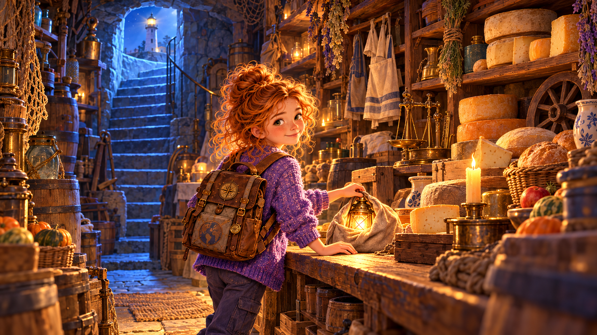
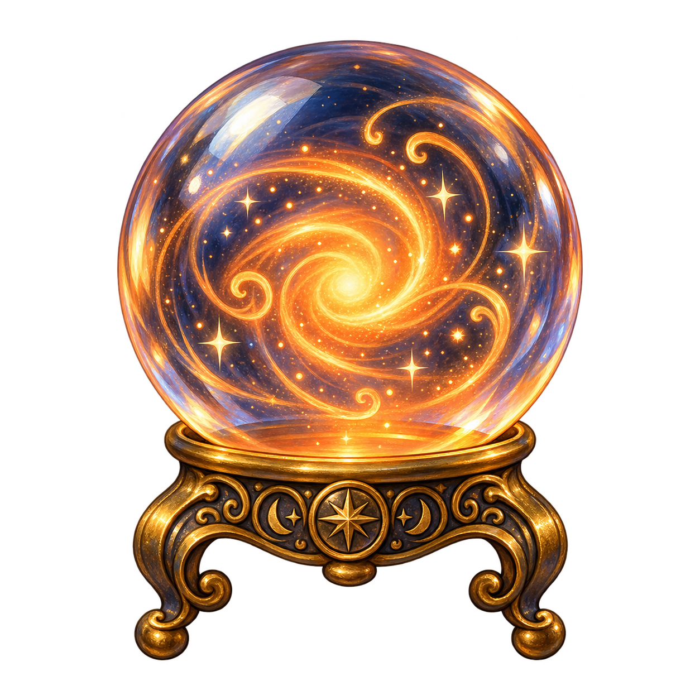

Present S/C + timetable · was/were · Past S regular + 60 irregular · Past C · Present Perfect + for/since · used to · 5 futures · time clauses
Story arc
Anya boards the Night Train at dawn by the observatory. The train travels through her whole year: 8 stations — Harbour → Market → Lighthouse → Temples → Postcards → City → Hogsmeade → Observatory. At every stop she meets familiar people and collects one artifact. In the finale: 8 artifacts and her farewell speech.
1 · Anya boards the train · first stop at the harbour · brass seller
🚂 Train arrives 06:12 · brass seller is waiting
🎧 PART A · Listen first (audio-first)
~140 words · listen 2 times BEFORE reading · cover the text with your hand
👂 Pre-reading listening · 5 Qs (by ear only)
① What time does the train arrive at the harbour?
② Who is waiting on the pier?
③ What did Anya wait for last August?
④ How long did she wait?
⑤ What did the brass seller give her as a goodbye gift?
📖 PART B · Read the story
⚓ Platform at the harbour
The Night Train stops at the harbour at 06:12 in the morning. The sky is turning pink and gold, and a thin fog is rising from the water. I am opening my journal on my lap when I see him through the window — the old brass seller. He is waiting on the pier, exactly where I met him last August. He is wearing the same brown coat and the same wool cap.
I step off the train and walk slowly along the wet stones.
«Last August,» I say quietly, «you were very patient with me. The ferry was late, the sky was grey, the waves were loud and cold. I waited two whole hours on this pier. I talked to you for a long time. You showed me a small compass from your old leather box. I asked about the direction to the island across the water. You smiled kindly, you pointed to the horizon and you answered me very slowly, word by word. I listened carefully and I learned the names of three winds: the north wind, the east wind, and the one you called the whispering wind.»
He is smiling now, under his white moustache. He is giving me the same brass compass, and it is heavy in my hand. «Take it,» he is saying softly. «The train will need a compass. The sea is wide and the stations are many.» I put the brass compass into my coat pocket. It is warm, like a small living thing.
The train is whistling once, twice. I am nodding to the old seller and I am climbing back to my carriage. My first artifact is in my pocket. The journey has really begun.
⌨️ PART C · Cloze · put the verb in the right form
The ferry late. The tourists tired. I two hours.
I to the seller. He me a compass. I about the island.
He and to the horizon. I and the names of three winds.
🧭 Theory · was / were + Past Simple regular
was / were
I/he/she/it was you/we/they were
Past of "to be"
The sky was grey. Waves were loud.
Past Simple regular
V + -ed
finished action in the past
I waited. I talked. He smiled.
3 sounds of -ed
/t/ /d/ /ɪd/
/t/ after k,p,f,s,sh,ch /ɪd/ after t,d /d/ everywhere else
asked/t/ · smiled/d/ · waited/ɪd/
🎯 Drill · was or were · 8
① The ferry late.
② The tourists tired.
③ I cold.
④ We on the stone pier.
⑤ The brass old and shiny.
⑥ You my only friend that morning.
⑦ The seagulls circling above us.
⑧ My coat wet.
⌨️ Spelling · V+ed (Past Simple regular) · 10
① to wait
② to talk
③ to ask
④ to smile
⑤ to point
⑥ to answer
⑦ to listen
⑧ to learn
⑨ to open
⑩ to show
📦 Harbour vocab · 8
harbour
ferry
pier
brass
compass
horizon
direction
seagull
🎁 Artifact unlocked · Brass Compass
+5 XP × 23 correct · HP 100/100 · train leaves at 06:30
⌨️ Vocab test · type EN word · 8
① гавань
② паром
③ пирс
④ латунь
⑤ компас
⑥ горизонт
⑦ направление
⑧ чайка
🎤 Speaking · 3 tasks
1
Warm-up (20 sec): ответь продавцу — «Yes, I remember…» · 3 was/were о том утре (sky/ferry/waves).
2
Main (60 sec): расскажи ему о последнем разе когда ты долго ждала транспорт. Используй 3 was/were + 5 -ed глаголов (waited, asked, talked, listened, learned).
3
Vocab in sentence (30 sec): составь по 1 предложению с каждым словом · harbour · pier · brass · horizon · compass.
2
🛍 Station 2 · Saturday Market
60 irregular verbs · 8 families
2 · the train stops at the market · grandma waiting with the basket
🚂 Train arrives 07:40 · grandma + basket

🎧 PART A · Listen first
~160 words · 20+ irregular verbs in context
👂 Pre-reading · 5 Qs
① Who meets Anya at the market?
② How many apples did Anya choose?
③ What did Anya try on?
④ What did she drink at the tea stall?
⑤ Did anything break when the boy ran past?
📖 PART B · Read the story
🛍 One Saturday at the market
The Night Train stops again at 07:40, right at the edge of the Saturday market. My grandmother is standing on the small wooden platform with our old wicker basket. She is waving at me through the mist. I ran to her and hugged her very tight. «Do you remember last Saturday?» I said with a smile. She just laughed.
«Last Saturday we went to the market together, early in the morning. We took the big wicker basket and we walked for twenty minutes down the narrow street. The market was busy and full of warm bread smells. A kind woman sold big red apples at the first stall. I chose ten of them and I paid with a small blue note. She gave me change in bright silver coins.»
«Then I saw a warm green scarf on another stall and I tried it on. You said it was perfect for autumn, so I bought it without thinking. After that, we drank hot black tea and we ate warm bread with yellow cheese. A small boy ran past us very fast and he nearly caught my hand. My basket fell on the ground, but luckily nothing broke inside. I came home tired and happy that evening. I wrote about the whole day in my journal before I fell asleep.»
Grandma is laughing now. She is handing me the basket with ten fresh red apples and a loaf of bread. «For the train,» she is saying. «For the long journey ahead.»
⌨️ PART C · Cloze · 10 irregular verbs
We to the market. We a basket.
I ten apples and with a note. She me change.
I a scarf and I it. We tea and bread.
A boy past. Nothing .
🧩 The 8 families of irregular verbs
i→a
sing → sang drink → drank ring → rang swim → swam begin → began run → ran
i→o
drive → drove ride → rode write → wrote rise → rose
cut → cut put → put let → let hit → hit read → read (/red/)
oo-change
take → took stand → stood understand → understood
unique
go → went be → was/were have → had do → did see → saw
vowel + consonant
eat → ate give → gave make → made come → came fall → fell break → broke choose → chose
⌨️ Spelling Arena · type the Past Simple · 30
① go
② buy
③ sell
④ take
⑤ give
⑥ eat
⑦ drink
⑧ run
⑨ catch
⑩ bring
⑪ think
⑫ teach
⑬ fight
⑭ see
⑮ write
⑯ drive
⑰ ride
⑱ sing
⑲ swim
⑳ begin
㉑ fall
㉒ break
㉓ choose
㉔ come
㉕ pay
㉖ say
㉗ cut
㉘ put
㉙ let
㉚ have
🔍 Error Hunt · 8 · type the correct form
① She buyed a scarf.
② He goed to the stall.
③ I eated warm bread.
④ My basket falled.
⑤ Grandma telled me to hurry.
⑥ Nothing breaked.
⑦ We drinked tea.
⑧ He catched my hand.
📦 Market vocab · 10
basket
stall
counter
change
to try on
scarf
note
coin
souvenir
tea stall
🎁 Artifact unlocked · Wicker Basket
grandma puts 10 apples and bread inside · +25 XP
⌨️ Vocab test · type EN word · 10
① basket
② market stall
③ shop counter
④ money you get back
⑤ put clothes on to test
⑥ warm neck clothing
⑦ paper money
⑧ small metal money
⑨ travel memory object
⑩ where they sell hot tea
🎤 Speaking · 3 tasks
1
Warm-up (20 sec): name 8 things you can buy at a market (irregular verbs — say «I bought a basket», «I bought a scarf»…).
2
Main (90 sec): tell grandma about your last shopping day. Use at least 10 different irregular verbs in Past Simple + market vocab.
3
Vocab in sentence (30 sec): build 1 sentence with each · basket · stall · counter · change · try on · souvenir.
3
🏚 Station 3 · Lighthouse cliff
Past Continuous · while / when
3 · the train stops at the cliff · ghost cat is waiting
🚂 Train arrives 09:00 · ghost cat on the step
🎧 PART A · Listen first
~150 words · Past Continuous + Past Simple
👂 Pre-reading · 5 Qs
① Who is sitting on the lighthouse step?
② What were the waves doing when Anya came back?
③ What rang while she was climbing?
④ Whose paw was shaking?
⑤ What does Anya take from the lighthouse this time?
📖 PART B · Read the story
🏚 Return to the cliff
The train pulls up at the stony base of the cliff. The lighthouse stands above me, grey and tall and very silent. The same ghost cat is sitting on the top step, washing its paw in the moonlight. «Hello, old friend,» I am saying as I am climbing out of the carriage. «Do you remember last Halloween?»
«At midnight the waves were crashing loudly against the cliff. The green seaweed was shining in the moonlight on the wet rocks. I was climbing the old wooden stairs of the lighthouse when I heard a soft bell somewhere above me.»
«While I was walking up, step by step, a small ghost was whispering near the dusty window. You, dear cat, were sitting on the very top step, and your little paw was shaking a little. When I finally reached the top, the bell rang once again, clear and bright. The old ghost told me a secret, something about my grandmother and a silver book, and then it disappeared into the fog. I never told anyone the secret, but I wrote one word about it in my journal.»
The cat is meowing softly now. It is pushing a small bronze bell toward me with its paw. «For the compass,» it seems to say with its sea-green eyes. «For your journey on the Night Train.» I take the bell and tie it to the loop on my compass. It makes a tiny silver sound in the wind. Two artifacts now. The train is waiting.
⌨️ PART C · Cloze · while / when
I the stairs when the bell .
The ghost while I .
When I the top, the cat there.
The waves all night. The seaweed in the moonlight.
The paw when I it. Suddenly the bell .
🧭 Theory · Past Continuous vs Past Simple
Past Continuous
was/were + V-ing
process in the past · ongoing action
The waves were crashing.
Past Simple
V2 / V-ed
point in the past · finished moment
The bell rang.
Parallel (while)
While X was V-ing, Y was V-ing
both processes at the same time
While I was walking, the cat was sitting.
Interruption (when)
X was V-ing when Y V-ed
process + interrupting point
I was climbing when the bell rang.
🎯 Drill · 10 pick-the-tense
① While I , Masha called me.
② The dog when the car appeared.
③ I a ghost at midnight — just one quick second.
④ They along the cliff for an hour.
⑤ When I the door, the cat ran out.
⑥ The bell for ten minutes.
⑦ While Anya , the moon .
⑧ I dinner at 8 pm yesterday.
⑨ Suddenly the lights .
⑩ I when my alarm .
📦 Lighthouse vocab · 10
lighthouse
cliff
seaweed
midnight
ghost
paw
bell
secret
to climb
to whisper
🎁 Artifact unlocked · Bronze Bell (lantern inside)
tie it to the compass · it rings in the wind · +30 XP
⌨️ Vocab test · type EN word · 10
① tower on cliff with a light
② tall rocky coast
③ green plant in the sea
④ 12:00 at night
⑤ white spirit from a dead person
⑥ cat's foot
⑦ ding-ding metal object
⑧ something you tell nobody
⑨ go up (stairs, hill)
⑩ speak very quietly
🎤 Speaking · 3 tasks
1
Warm-up (20 sec): look at the ghost cat — describe what it is doing right now (3 Present Continuous sentences).
2
Main (60 sec): describe a scary night from your life. What were you doing when something happened? Use 5 Past Continuous + 5 Past Simple verbs.
3
Vocab in sentence (30 sec): build 1 sentence with each · lighthouse · cliff · ghost · bell · to climb · to whisper.
4
🏛 Station 4 · Temple valley
Present Perfect · for / since
4 · the train stops in the temple valley · the guide is waiting
🚂 Train arrives 10:30 · guide with old map
🎧 PART A · Listen first
~160 words · 12+ Present Perfect forms
👂 Pre-reading · 5 Qs
① How many temples has Anya visited since July?
② How long has the guide walked these roads?
③ How many secret paths has the guide shown?
④ Who has kept every postcard Anya sent?
⑤ For how many months has Anya known the guide?
📖 PART B · Read the story
🏛 A year of temples
The train slides quietly into the temple valley. The morning sun is warm on the stone columns. Our guide is waiting on the platform with an old leather map rolled under her arm. «Welcome back, Anya,» she is saying with a slow smile. «I have been waiting for you since dawn.»
«I have been to five sacred temples with her since July. I have never seen a map as old as the one in the first temple — it was made of real deer skin. Our guide has walked these dusty roads for ten long years. She knows every curve and every small flower. She has already shown us three secret paths through the mountains, and we haven't finished the whole expedition yet.»
«I have taken many photos since September — maybe three hundred, maybe more. My grandmother has kept every single postcard I have sent her this year. She keeps them in a wooden box next to her bed. We have known our guide for three months now and she really feels like family. She has taught us the names of twelve plants and the story of the river.»
She is giving me the old map now. «It has travelled with me for ten years,» she is saying, «and it has seen many brave feet. Now it will travel with you. You will find your own paths.» I take the map carefully with both hands. It is soft and warm, and it smells like old mountains. I am putting it inside my journal. The train is whistling. I am running back.
⌨️ PART C · Cloze · Present Perfect
I to 5 temples since July. I such an old map.
She these roads for 10 years. She us 3 paths.
I many photos since September. Grandma every postcard.
We the guide for 3 months. We the expedition yet.
🧭 Theory · Present Perfect
have/has + V3 — link between past and present
experience:I have been to Italy. (any time up to now)
recent result:She has just finished.
for + period: for 3 months, for 10 years, for an hour
since + point in time: since July, since 2020, since my birthday
signals: ever · never · just · already · yet · for · since
🎯 Drill · signal words · 8
① I have been to Italy.
② She has finished her homework.
③ We haven't visited that temple .
④ Have you tried this tea?
⑤ They have seen three temples today.
⑥ I have taken many photos September.
⑦ We have walked this road three hours.
⑧ I have known her my birthday.
⚡ for or since? · 10 taps
① three months —
② July —
③ 2020 —
④ an hour —
⑤ my birthday —
⑥ ten years —
⑦ Monday —
⑧ a week —
⑨ 7 o'clock —
⑩ five minutes —
📦 Temples vocab · 8
temple
sacred
expedition
map
guide
path
ancient
valley
🎁 Artifact unlocked · Ancient Map
the guide gives you her map of 10 years · +40 XP
⌨️ Vocab test · type EN word · 8
① holy building for prayer
② holy, special, religious
③ long organised trip
④ drawing of a place
⑤ person who shows places
⑥ narrow road for walking
⑦ very very old
⑧ low land between mountains
🎤 Speaking · 3 tasks
1
Warm-up (20 sec): name 5 famous historical places you have heard about but have never been to. Use "I have heard of…" / "I have never been to…".
2
Main (90 sec): tell the guide about your year. Use at least 3 "I have been to…" + 3 "I have never…" + 2 sentences with for/since.
3
Vocab in sentence (30 sec): build 1 sentence with each · temple · sacred · map · guide · path · ancient.
5
✉️ Station 5 · Postcard depot
used to · past habit NOT now
5 · the train stops at the old depot · postman has your letters
🚂 Train arrives 12:00 · old postman smiling
🎧 PART A · Listen first
~110 words · used to · habit then vs now
👂 Pre-reading · 5 Qs
① What did Anya used to send?
② What does she send now?
③ What was her suitcase like before?
④ Did grandma used to keep photographs?
⑤ What does a postcard carry, according to grandma?
📖 PART B · Read the story
✉️ My suitcase then and now
The postman is standing at the old wooden depot with a small stack of yellow letters in his gloved hands. He is handing me a bright postcard with a bustling square on it. «From August,» he is saying with a friendly nod.
I used to send postcards every single week when I was younger. Now I mostly send voice memos to my friends. My suitcase used to be empty and quiet — just one pair of socks and a toothbrush. Now it is always full of bustling souvenirs: shells, dried flowers, folded tickets, small stones.
I used to think that a postcard was just a boring paper rectangle. Now I know it is a small window into one quiet day in one bright city.
My grandmother didn't use to keep photographs on her walls, because she said they faded too fast. Instead, she used to keep every postcard in a wooden drawer by the window. She used to say that a postcard carries a smell of a city, even after many years. If you open an old postcard and you breathe deeply, you can still smell the sea or the market or the rain.
«Take this one,» the postman is saying kindly. He is putting the postcard in my hand. «You wrote it last August, from the harbour, when you were waiting for the ferry.» I am reading my own handwriting and I am smiling. It is feeling like meeting an older sister I have forgotten about.
⌨️ PART C · Cloze · used to
I postcards every week. Now I send voice memos.
My suitcase empty. Now it is full.
Grandma photos. She postcards.
Did you cartoons when you were little?
🧭 Theory · used to
used to = past habit that is NO longer true
(+) used to + V · I used to play piano.
(−) didn't use to + V · She didn't use to drink coffee.
(?) Did you use to…? · Did you use to live here?
⚠️ ONLY for long habits · not for one single moment
⌨️ Transform · 10 · «I played piano as a child» → «I used to play piano»
① As a child, I played piano.
② My dad worked in a bank. (not now)
③ We lived in Moscow. (not now)
④ Grandma didn't drink coffee.
⑤ Did you watch cartoons? (habit)
⑥ I wrote postcards every Sunday.
⑦ My cat slept on my bed.
⑧ We didn't travel in winter.
⑨ She read books at bedtime.
⑩ Did your brother play football?
📦 Postcards vocab · 8
postcard
suitcase
voice memo
bustling
envelope
stamp
address
handwriting
🎁 Artifact unlocked · The August Postcard
her own handwriting from the past · a reminder of who she was · +45 XP
⌨️ Vocab test · type EN word · 8
① small picture card with a message
② big bag for travel
③ recorded short audio message
④ noisy and full of people
⑤ paper cover for a letter
⑥ small picture glued on envelope
⑦ place where someone lives (street, number…)
⑧ the way you write by hand
🎤 Speaking · 3 tasks
1
Warm-up (20 sec): look at your suitcase RIGHT NOW · what IS inside? (3 Present Simple sentences).
2
Main (60 sec): tell the postman 5 things you used to do as a kid but DON'T do now. Full sentences, start every one with "I used to…".
3
Vocab in sentence (30 sec): build 1 sentence with each · postcard · suitcase · voice memo · bustling · stamp · handwriting.
6
🏙 Station 6 · Hometown Central
Pres S + Pres C + city vocab (май)
6 · the train enters her hometown · Masha is waiting with coffee
🚂 Train arrives 14:00 · Masha at Central Station
🎧 PART A · Listen first
~130 words · Present Simple + Present Continuous
👂 Pre-reading · 5 Qs
① Who is waiting for Anya at Central Station?
② What time does the bakery open every morning?
③ Until when does the pharmacy stay open?
④ Who is reading on the park bench right now?
⑤ What does Anya take from the fountain?
📖 PART B · Read the story
🏙 A tour of my hometown
The train is pulling slowly into Central Station. The light outside is bright and cold. Masha is standing on the platform with two tall paper cups of coffee. She is waving one of them above her head. «Your town is waking up,» she is laughing. «Come, look.»
«My town has a small square in the middle, with a round stone fountain in it. I walk through the pedestrian zone every single morning on my way to school. The bakery on the corner opens at seven, and it always smells of warm cinnamon. The pharmacy stays open until midnight for emergencies.»
«Right now the small children are playing loudly at the playground near the bench. A grey-haired man is reading a newspaper on a park bench under the big oak tree. Two women are crossing the stone bridge towards the metro station, both carrying heavy bags. The traffic light on the corner is turning red. A boy is sitting quietly near the statue of the old mayor. The library doors are opening for the morning, and three students are already waiting.»
Masha and I are walking to the fountain and we are sitting on the warm stone edge. I am leaning carefully over the water. A shiny copper coin is lying at the bottom among the leaves. I am picking it up slowly with my fingers. «For later,» I am whispering to Masha. She is smiling. She knows about my collection.
⌨️ PART C · Cloze · Pres S vs Pres C
The bakery at 7 every morning. Right now it .
I here every day. At this moment I with Masha.
Children in the playground after school. Right now they football.
The pharmacy open until midnight. Look — a nurse now.
📦 City vocab · 15 places (from May)
bakery
pharmacy
library
playground
bridge
square
crossing
post office
metro station
parking lot
fountain
statue
traffic light
pedestrian zone
park bench
🎯 Functions match · place → function · 10
① You buy medicine at the .
② You borrow books at the .
③ You buy fresh bread at the .
④ Kids play at the .
⑤ You send a letter from the .
⑥ You wait for a train at the .
⑦ You walk safely across a road at a .
⑧ You sit and rest on a .
⑨ You park your car at a .
⑩ Cars stop at a .
🎁 Artifact unlocked · Shiny Fountain Coin
she made a wish for the year ahead · +50 XP
⌨️ Vocab test · type EN word · 12
① place to buy bread
② place to buy medicine
③ place to borrow books
④ place for kids to play
⑤ structure over a river
⑥ open space in town centre
⑦ safe place to walk over a road
⑧ place to send letters
⑨ place where trains stop underground
⑩ place to leave your car
⑪ water shooting up from stone
⑫ red / yellow / green on the road
🎤 Speaking · 3 tasks
1
Warm-up (20 sec): name 8 places in your city (bakery, pharmacy, library…). Only nouns.
2
Main (90 sec): give Masha a tour of your city. Name 7 places + what you do there (Pres S) + what people are doing there right now (Pres C).
3
Vocab in sentence (30 sec): build 1 Pres S + 1 Pres C with each · bakery · bridge · fountain · playground · crossing · library.
7
🎃 Station 7 · Hogsmeade Halt
Halloween · mixed past
7 · the train stops in Hollow · a Jack-o'-lantern glows on the platform
🚂 Train arrives 17:00 · Halloween · witch on broom

🎧 PART A · Listen first
~100 words · Past Simple + Past Continuous · seasonal
👂 Pre-reading · 4 Qs
① Who did Anya meet in Sleepy Hollow?
② What was the witch doing?
③ Who whispered a spell?
④ What did Jack put on?
📖 PART B · Read the story
🎃 One night in Sleepy Hollow
The train is slowing down at Hogsmeade Halt. The sky is dark purple, the colour of old plums. A huge orange Jack-o'-lantern is burning brightly on the wooden platform. Children in bright costumes are running between the carriages, laughing and shouting.
«Remember last Halloween?» I am asking my pumpkin-shaped friend who is riding with me on the train.
«On Halloween night, Jack walked alone through Sleepy Hollow. A witch was flying on her black broom above the haunted church tower. A small black cat sat on an orange pumpkin and watched him with bright green eyes. While Jack was walking down the main street, children shouted «trick or treat!» from every doorway. He gave them bright paper-wrapped candy and he put on his new skeleton costume. Then the old witch whispered a long spell above the trees, and the whole hollow lit up with blue fire. Jack was not afraid. He waved at the witch and the witch waved back, friendly.»
I am taking a little Jack-o'-lantern from the station seller. It fits in my hand. It is glowing softly, warm and orange, like a small sleeping heart. I am putting it in my bag, next to the compass and the bell.
⌨️ PART C · Cloze · mixed past
On Halloween night, Jack through Sleepy Hollow. A witch on her broom.
While Jack , children «trick or treat!»
He them candy. The witch a spell. The hollow up.
📦 Halloween vocab · 10
Jack-o'-lantern
witch
broom
black cat
pumpkin
haunted
hollow
trick or treat
costume
spell
🎁 Artifact unlocked · Little Jack-o'-lantern
a tiny pumpkin lantern for the carriage · +55 XP
⌨️ Vocab test · type EN word · 10
① carved pumpkin with a candle
② woman who does magic
③ thing a witch flies on
④ dark-coloured cat
⑤ big orange vegetable
⑥ full of ghosts
⑦ small valley / tree with hole
⑧ what kids shout for candy
⑨ special clothes for parties
⑩ magic words
🎤 Speaking · 3 tasks
1
Warm-up (20 sec): name 6 Halloween things (witch, broom, pumpkin…). Just the nouns.
2
Main (60 sec): describe your best Halloween costume ever. What were you doing while you were wearing it? What happened? Use Past Simple + Past Continuous.
3
Vocab in sentence (30 sec): build 1 sentence with each · witch · broom · pumpkin · haunted · costume · spell.
8
🔭 Station 8 · Dawn Observatory · return
5 futures + time clauses
8 · the train returns to the start · full circle · 5 telescopes at sunset
🚂 Train returns 19:30 · sunset · 5 telescopes
🎧 PART A · Listen first
~170 words · all 5 future forms + time clauses
👂 Pre-reading · 5 Qs
① What will Anya probably do tomorrow?
② What is she going to buy on Saturday?
③ When does the morning ferry leave?
④ By what year will she have finished school?
⑤ What does she say about "when"?
📖 PART B · Read the story
🔭 Five telescopes · five futures
The Night Train is returning home to the Dawn Observatory, just as the sun is beginning to set. The whole sky is orange and pink and lavender, like a huge painted scarf. Five brass telescopes are standing in a row on the stone roof, each one pointing at a different part of the evening sky.
I am climbing up to the roof slowly, with all my eight artifacts in my bag. I am going to practise my five futures, one at each telescope.
At the first telescope, I say: «Tomorrow I will probably visit my aunt. I haven't decided yet.» That is Future Simple with will.
At the second telescope, I say: «On Saturday I am going to buy brass for my dad. I already have the money ready in my coat pocket.» That is going to.
At the third telescope, I say: «I am meeting Masha at 4 on Monday. She already confirmed by text.» That is Present Continuous for an arrangement.
At the fourth telescope, I say: «The ferry leaves at 7:15 tomorrow and the train arrives in the city at 11:40.» That is Present Simple for a timetable.
At the fifth telescope, I say: «By 2030 I will have finished school. By the age of 25 I will have travelled to three continents.» That is Future Perfect.
And there is one more rule, I am saying to the open sky. «When I finish school, I will travel. As soon as the ferry arrives, I will board. By the time I come back, the sky will have turned pink again.» No «will» after when, after as soon as, or after by the time. Only Present Simple. Only present.
The quest is complete. Eight stations, eight artifacts, all my tenses.
⌨️ PART C · Cloze · 5 futures
Look at those clouds — it !
I Masha at 4 tomorrow.
The train at 7:15.
By 2030 I school.
Tomorrow I home.
🧭 5 future forms side-by-side
Future Simple (will)
will + V
prediction · promise · decision NOW · offer
I will call you tonight.
Be going to
am/is/are + going to + V
plan + visible evidence
Look at those clouds — it is going to rain.
Pres Cont (arrangement)
am/is/are + V-ing + time/place
fixed meeting with person
I am meeting Masha at 4.
Pres Simple (timetable)
V / V-s + schedule
public: trains · films · classes
The train leaves at 7:15.
Future Perfect
will have + V3 + by…
finished before a future point
By 2030 I will have finished school.
🎯 Drill · 10 MCQ · 5 futures
① Look at those clouds — it ___ rain!
② I ___ Masha at 4 tomorrow — she confirmed.
③ The film ___ at 19:30.
④ OK fine, I ___ help you — I just decided now.
⑤ By 2030 I ___ school.
⑥ Tomorrow I ___ probably stay home.
⑦ The train from Moscow ___ at 11:40.
⑧ We ___ to Italy next June — tickets are booked.
⑨ By the age of 30 she ___ her own company.
⑩ Don't worry, I ___ do it for you.
⏳ Final Rule · Time clauses · NO "will" after when / if / as soon as / until / the moment / by the time
✅ When I finish school, I will travel.
❌ When I will finish school, I will travel.
⌨️ Drill · time clauses · 8 gap-fill
① When I ___ (finish) school, I will travel.
② If you ___ (come) early, we'll have time.
③ As soon as she ___ (arrive), call me.
④ Until you ___ (apologise), I won't speak to you.
⑤ By the time we ___ (reach) the top, the sun will set.
⑥ The moment he ___ (see) the gift, he'll smile.
⑦ When Masha ___ (come) back, we'll start dinner.
⑧ If it ___ (rain), we'll stay home.
🔍 Error Hunt · 6 time clauses
① When I will come home, I will call. → "When I ___"
② If you will come early, we will talk. → "If you ___"
③ As soon as she will arrive, call me. → "As soon as she ___"
④ Until he will apologise, I won't talk. → "Until he ___"
⑤ The moment he will see it, he'll smile. → "The moment he ___"
⑥ By the time we will reach the top, sun will set. → "By the time we ___"
📦 Observatory + future markers · 15
observatory
telescope
dawn
sunset
constellation
tomorrow
next week
in 2 years
by 2030
by the time
as soon as
until
probably
in the future
the moment
🎁 Artifact unlocked · Brass Telescope
a small brass telescope · +60 XP · QUEST COMPLETE · 8/8 artifacts!
⌨️ Vocab test · type EN word · 15 observatory + future markers
① building for watching stars
② tube for looking at stars
③ early morning sunrise
④ end of day sun going down
⑤ group of stars with a name (Big Dipper…)
⑥ day after today
⑦ week after this one
⑧ 2 years from now
⑨ before 2030
⑩ before that moment comes
⑪ the moment X happens (= immediately when)
⑫ not before X happens
⑬ maybe / very likely
⑭ some future time
⑮ right when X happens
🎤 Speaking · 3 tasks (5 futures + time clauses)
1
Warm-up (30 sec): name all 5 futures by their Russian/English label + say ONE example of each in the air.
2
Main (90 sec): give 5 sentences, ONE for each future form — tomorrow (will) · next weekend (going to) · Friday 4pm (Pres C arrangement) · the morning train (Pres S timetable) · by age 25 (Future Perfect).
3
Time clauses (40 sec): finish 6 time-clause sentences aloud · When I finish school, I… · As soon as I come home, I… · By the time I'm 20, I… · If it rains tomorrow, I… · Unless I'm tired, I… · Before I go to bed, I….
⏳
⏳ Future Tenses · deep dive · all nuances
7 forms · 70+ drills · discrimination · transforms
8.5 · after the Observatory · every trick of the English future · will / going to / Pres Cont / Pres Simple / Fut Perfect / Fut Continuous / time clauses
I will help you. (offer) I won't do it again. (promise)
2. Be going to
am/is/are + going to + V
planned intention · prediction with visible evidence
We are going to move house. (plan) It is going to rain. (evidence)
3. Present Continuous
am/is/are + V-ing
fixed personal arrangement · needs TIME + PLACE + (PERSON)
I am meeting Masha at 4 at the cafe.
4. Present Simple
V / V-s
public timetable · schedule verbs: leave / arrive / start / open / close / end / begin / finish
The train leaves at 7:15. The film starts at 19:30.
5. Future Perfect
will have + V3 + by…
finished BEFORE a point in the future
By 2030 I will have finished school.
6. Future Continuous (bonus)
will be + V-ing
action in progress AT a future moment
At 8 pm tomorrow I will be flying to Rome.
7. Time clauses
when / if / as soon as / until / by the time / the moment / unless + V (Pres S)
NO "will" after these words · use Present Simple
When I finish, I will call you.
A · 🟩 will · 5 uses
prediction (I think/believe): I think it will rain tomorrow.
promise: I will always love you. I won't tell anyone.
spontaneous decision (right now in the moment): I'll have the salad, please.
offer / help: I'll carry that bag for you.
request: Will you close the door, please?
A1 · Pick the USE · 10
① "OK, I'll wash the dishes!" —
② "I will never lie to you." —
③ "I think Spain will win the match." —
④ "Will you help me with the box?" —
⑤ "Don't worry, I'll drive you to the airport." —
⑥ "He will probably be late again." —
⑦ "I'll take the small one." (pointing at a cake) —
⑧ "Will you be quiet for a moment?" —
⑨ "I think robots will teach in schools by 2050." —
⑩ "Fine! I won't say a word!" —
A2 · Type the correct will-form · 8
① (+) I ___ call you tonight.
② (−) She ___ eat meat ever again.
③ (?) ___ you lend me your pen?
④ (+) It ___ probably rain.
⑤ (−) I ___ forget this day.
⑥ (?) When ___ the train arrive?
⑦ Short answer "Yes, ___" (I/to help)
⑧ Short answer "No, ___" (they/to come)
B · 🟧 going to · 2 uses
planned intention (decided before, not fixed-arrangement): I am going to study medicine.
prediction with visible evidence: Look at those clouds — it is going to rain.
Difference from will:will = decide NOW · going to = already decided BEFORE now · going to (evidence) = you can SEE the proof.
B1 · will or going to? · 10
① Look out! You ___ hit that tree!
② OK, I ___ help you with your homework.
③ We bought the tickets. We ___ fly to Madrid.
④ I think it ___ be a cold winter.
⑤ Look at her stomach — she ___ have a baby.
⑥ The phone is ringing — I ___ get it.
⑦ Next summer we ___ visit our grandparents in the village.
⑧ Don't worry, I ___ call you as soon as I arrive.
⑨ She has already saved €2000. She ___ buy a scooter.
⑩ Who knows — maybe one day humans ___ live on Mars.
C · 🟩 Present Continuous for arrangements
A fixed personal arrangement — usually with another person · needs TIME + PLACE + (PERSON).
I am meeting the dentist on Friday at 3. ✓ TIME + PERSON
We are flying to Istanbul on Saturday. ✓ TIME
I am going to study. ✗ (too general — use going to)
Difference from going to: Pres Cont = CONFIRMED meeting/booking · going to = INTENTION (maybe no date yet).
C1 · Pres Cont or going to? · 8
① I ___ Masha at 4 on Monday — she confirmed.
② One day I ___ a big house with a garden.
③ We ___ the Louvre on Saturday at 10 — tickets booked.
④ Someday I ___ Spanish.
⑤ She ___ at 7 pm — she already bought the ticket.
⑥ Eventually I ___ a dog.
⑦ I ___ Anna for dinner tomorrow at Luigi's — I booked the table.
⑧ Next year we ___ a big party.
D · 🟨 Present Simple · public timetable
Only for public schedules. Verbs: leave, arrive, start, open, close, begin, end, finish, return, depart, run.
✓ The train leaves at 7:15. ✓ The shop opens at 9.
✗ I leave at 7:15. (personal — use am leaving / going to leave)
D1 · Choose the schedule verb · 6
① The film ___ at 19:30.
② The bakery ___ at 7 every morning.
③ The last bus ___ at midnight.
④ The exhibition ___ on 31 December.
⑤ The train from Moscow ___ at 11:40.
⑥ My new school year ___ on 1 September.
E · 🟪 Future Perfect · will have + V3
An action completed BEFORE a point in the future.
Signals: by 2030, by Friday, by the time, by then, in two years
By 2030 I will have finished school.
By the time you arrive, I will have cooked dinner.
E1 · Build Future Perfect · 8 type-in
① By 2030 I ___ (finish) school.
② By Friday she ___ (write) three essays.
③ By the time you come, I ___ (cook) dinner.
④ By midnight we ___ (reach) the border.
⑤ In two hours the plane ___ (land) in Rome.
⑥ By the age of 25 I ___ (travel) to 3 continents.
⑦ By next Sunday they ___ (open) the new bakery.
⑧ By 10 pm I ___ (not finish) my homework yet.
F · 🟦 Future Continuous · will be + V-ing (bonus B1+)
An action in progress AT a moment in the future.
Signals: at 8 pm tomorrow, this time next week, all day Monday
At 8 pm tomorrow I will be flying to Rome.
This time next week we will be sitting on the beach.
F1 · Build Future Continuous · 6 type-in
① At 8 pm tomorrow I ___ (fly) to Rome.
② This time next week we ___ (lie) on the beach.
③ At 10 am Monday he ___ (take) the exam.
④ All evening the kids ___ (watch) movies.
⑤ This time tomorrow I ___ (not sleep) — I'll be awake!
⑥ At midnight the neighbours ___ (dance) again.
G · ⏳ Time clauses · the RULE · 10 words
After these 10 words — NO "will", use Present Simple:
when · if · as soon as · until · till · by the time · the moment · before · after · unless
✓ When I finish school, I will travel.
✗ When I will finish…
G1 · Complete the time clause · 12 gap-fill
① When I ___ (finish) school, I will travel.
② If you ___ (come) early, we'll have time.
③ As soon as she ___ (arrive), call me.
④ Until you ___ (apologise), I won't speak to you.
⑤ By the time we ___ (reach) the top, the sun will set.
⑥ The moment he ___ (see) the gift, he'll smile.
⑦ I'll call you before I ___ (leave) home.
⑧ After the film ___ (end), we'll have dinner.
⑨ Unless it ___ (rain), we'll walk.
⑩ Till my brother ___ (come) home, I can't go out.
⑪ When Masha ___ (finish) her exam, she will join us.
⑫ By the time I ___ (turn) 20, I will have travelled the world.
G2 · Error Hunt · 8 (fix the clause verb)
① When I will come home, I will call you. → "When I ___"
② If you will come early, we will talk. → "If you ___"
③ Before we will leave, call grandma. → "Before we ___"
④ Unless it will stop raining, we will stay. → "Unless it ___"
⑤ After he will finish, we will start. → "After he ___"
⑥ The moment he will arrive, let me know. → "The moment he ___"
⑦ Until she will answer, I won't sleep. → "Until she ___"
⑧ As soon as the train will stop, get off. → "As soon as the train ___"
H · ⚔️ Boss Fight · 20 mixed future questions
All 7 forms mixed. Pick the ONE right form.
① Look at those clouds — it ___!
② OK fine, I ___ do it.
③ The train ___ at 7:15.
④ I ___ Masha at 4 — we confirmed.
⑤ By 2030 I ___ school.
⑥ At 8 pm tomorrow we ___ to Rome.
⑦ When Anna ___ home, we'll have dinner.
⑧ Tickets booked — we ___ to Spain in May.
⑨ Unless it ___, we'll walk.
⑩ The film ___ at 19:30.
⑪ By Christmas Masha ___ her book.
⑫ As soon as she ___, call me.
⑬ Watch out! You ___!
⑭ This time next week I ___ on the beach.
⑮ The pharmacy ___ until midnight.
⑯ I think humans ___ live on Mars one day.
⑰ By the time she wakes up, I ___ breakfast.
⑱ Before you ___ , please say goodbye.
⑲ I ___ the small cake, please.
⑳ After the exam ___, let's celebrate.
I · 🎤 Future Speaking Marathon · 7 prompts, one per form
1
will — predictions: Give 3 predictions about yourself in 2030 using will / won't.
2
going to — plans: Describe 3 things you are going to do in the next month (with reasons).
3
going to — evidence: Look out of the window RIGHT NOW. Make 3 predictions with visible evidence.
4
Pres Cont — arrangements: Describe 3 confirmed meetings/plans for THIS week (time + place + person).
5
Pres Simple — timetable: Describe your school day timetable using 5 Present Simple verbs (starts, finishes, begins, opens, leaves).
6
Future Perfect — before a point: By age 25 · by 2030 · by the end of this school year — what WILL YOU HAVE done? 3 sentences.
7
Time clauses · 6 slots: Finish out loud — When I finish school, I… · If I have free time tomorrow, I… · As soon as I come home, I… · Until I turn 18, I… · By the time I'm 20, I… · The moment I get the letter, I…
9
📦 Big Vocab Capsule · 80 words recap
8 locations · click to hear
9 · all year vocab in one place · 20 type-in + song finale
🛍 Market (10)
basket
stall
counter
change
to try on
souvenir
scarf
note
coin
tea stall
⚓ Harbour (8)
harbour
ferry
pier
brass
compass
horizon
direction
seagull
🏚 Lighthouse (10)
lighthouse
cliff
seaweed
midnight
ghost
paw
bell
secret
to climb
to whisper
🏛 Temples (8)
temple
sacred
expedition
map
guide
path
ancient
valley
✉️ Postcards (8)
postcard
suitcase
voice memo
bustling
envelope
stamp
address
handwriting
🏙 City (15)
bakery
pharmacy
library
playground
bridge
square
crossing
post office
metro station
parking lot
fountain
statue
traffic light
pedestrian zone
park bench
🎃 Halloween (10) + 🔭 Observatory & future markers (15) — see them in stations 7 and 8
⌨️ Vocab test · type EN word · 20 mixed
① корзинка
② прилавок
③ открытка
④ чемодан
⑤ храм
⑥ гид
⑦ маяк
⑧ утёс
⑨ полночь
⑩ призрак
⑪ ведьма
⑫ тыква
⑬ обсерватория
⑭ рассвет
⑮ горизонт
⑯ компас
⑰ пекарня
⑱ аптека
⑲ мост
⑳ как только
🎵 Song reprise · Que Será, Será · Doris Day (1956)
familiar song from Dawn Observatory · sing along with the will-lines
When I was just a little girl,
I asked my mother, «What will I be? Will I be pretty, will I be rich?»
Here's what she said to me:
Que será, será,
Whatever will be, will be.
The future's not ours to see.
Que será, será.
10
🎤 Grand Finale · 8 artifacts · 8 cue cards
quest complete · stand up and speak
10 · put all 8 artifacts in front of you · one cue card each
📋 How it works
Put the 8 objects (or a list of them) in front of you. On each card, pick up one artifact and start talking. 1-2 minutes per card. Record a voice memo or speak live.
🎤 Voice memo · 4 minutes — pick 4 artifacts from the Grand Finale (section 10) and record a voice memo in TG. Minimum 1 minute per artifact. Don't jump between cards chaotically.
⌨️ Spelling Arena 30 verbs (station 2) — complete ALL 30 with zero mistakes. If you miss any, redo until perfect. Screenshot of the final score in TG.
⌨️ Big Vocab Capsule · 20 type-in (section 9) — all 20 without mistakes. Screenshot.
📝 6 time-clause sentences (station 8) — copy into your notebook, underline Present Simple in green and will/going to/Future Perfect in blue. Photo of the notebook in TG.
📖 Reading out loud — read the story from station 2 (Market) three times, time each read. Goal: no pauses on irregular verbs.
🎵 Bonus: sing the chorus of Que Será, Será as a voice memo in TG. +1 star ⭐